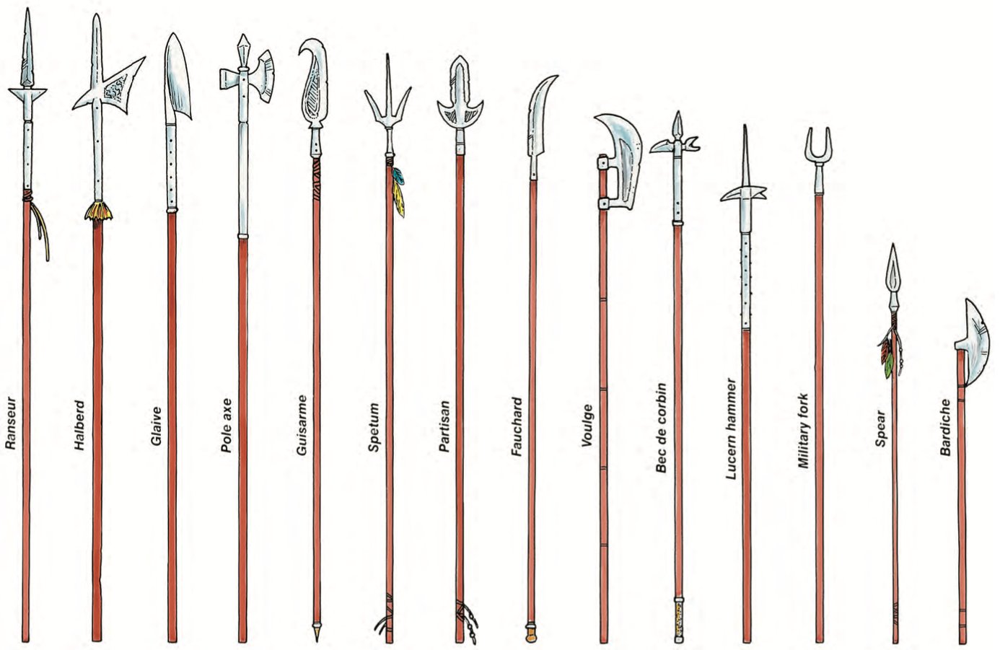

| Name | Cost | Weight | Size | Type | Speed | Melee | Missile | Range | Damage | Knockdown | Weapon Proficiency | Source | |||||
|---|---|---|---|---|---|---|---|---|---|---|---|---|---|---|---|---|---|
| (lbs.) | Reach | ROF | S | M | L | Sm-Med | Large | Single | Related / Familiar / Tight Group | Broad Group | |||||||
| Bec de corbin | 8 gp | 10 | L | P/B | 9 | — | — | — | — | — | 1d8 | 1d6 | — | Bec de corbin | — | — | Player’s Handbook p. 94 |
| Bec de corbin | — | — | — | — | — | — | — | — | — | — | — | — | — | Bec de corbin | Polearms | Pole Weapons | The Complete Fighter’s Handbook p. 59, 60 |
| Two-Hander Style Specialization | — | — | — | — | 6 | — | — | — | — | — | — | — | — | — | — | — | The Complete Fighter’s Handbook p. 63 |
| Bec de corbin | 8 gp | 10 | L | P/B | 9 | — | — | — | — | — | 1d8 | 1d6 | — | Bec de corbin | — | — | Arms and Equipment Guide p. 109 |
Player’s Handbook p. 98
Bec de corbin: This was a highly specialized weapon of the upper classes during the Late Middle Ages and the early Renaissance. It is an early can-opener designed specifically to deal with plate armor. The pick or beak is made to punch through plate, while the hammer side can be used to give a stiff blow. The end is fitted with a short blade for dealing with unarmored or helpless foes. The weapon is about 8 feet long. Since the weapon relies on impact, a great deal of swinging space is needed.
The Complete Fighter’s Handbook p. 63
Two-Hander Style - Style Specialization
You can, by devoting a weapon proficiency to it, take a Style Specialization with Two-Hander Style.
Style Specialization with Two-Hander Style gives you a very specific benefit: When you're using a weapon two-handed, that weapon's Speed Factor is reduced by 3.
For example, a fighter with Two-Hander Style Specialization and wielding a Bastard Sword can wield his weapon faster in two-handed style than in one-handed style. Used in one hand, the Bastard Sword has a Speed Factor of 6. In two hands (normally), it has a Speed Factor of 8. But used in two hands by someone with Two-Hander Style Specialization, it has a Speed Factor of (8-3) 5.
This is because when a fighter wields such a weapon with both hands on the hilt, he has more leverage on the blade and can move it faster. That's what Style Specialization in Two-Hander Style will do for the character: It teaches him how to use the weapon much faster and more aggressively than someone with less specialized training in the weapon.
Player’s Handbook p. 98
